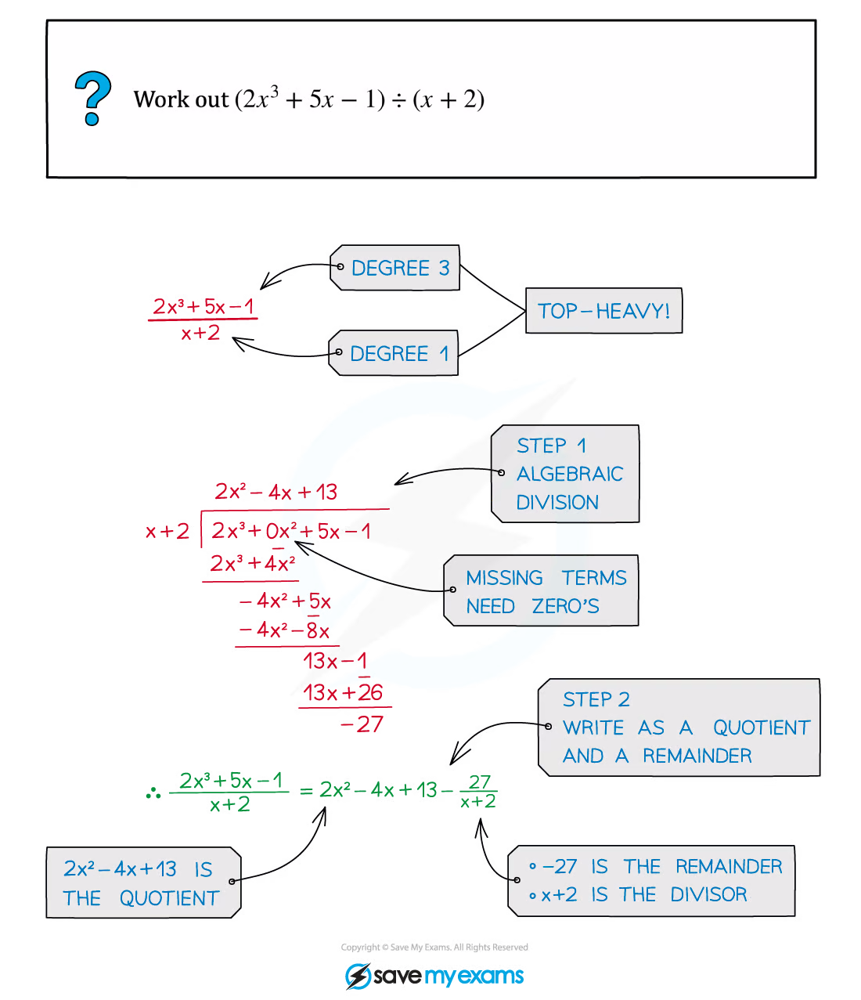
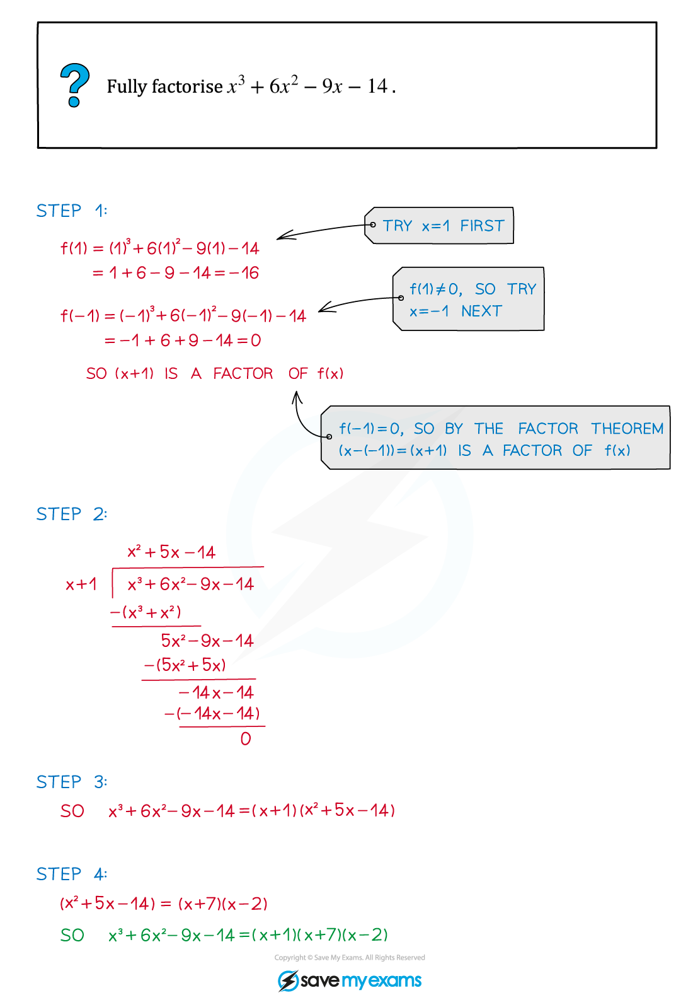
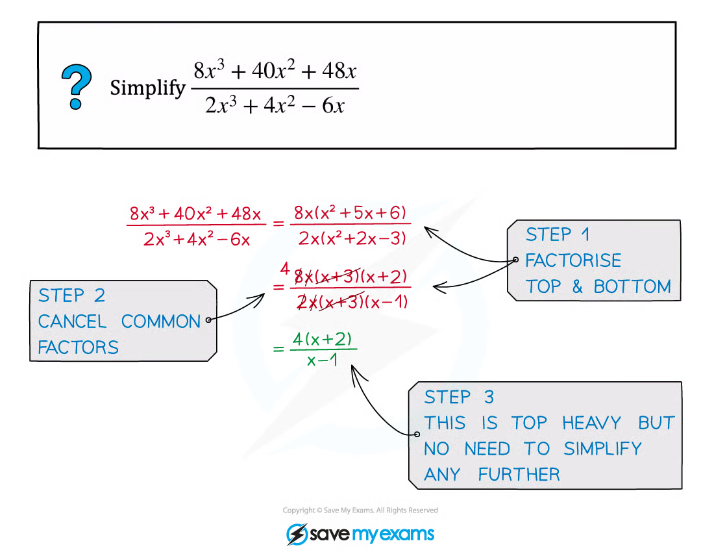
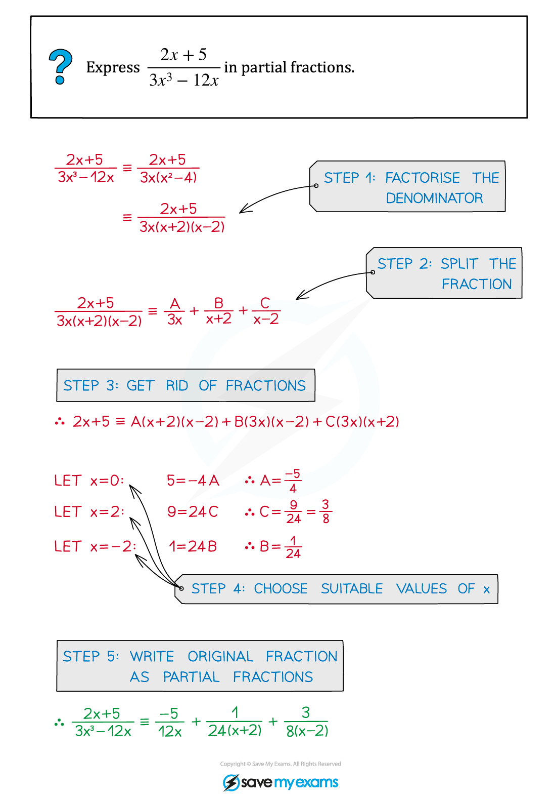
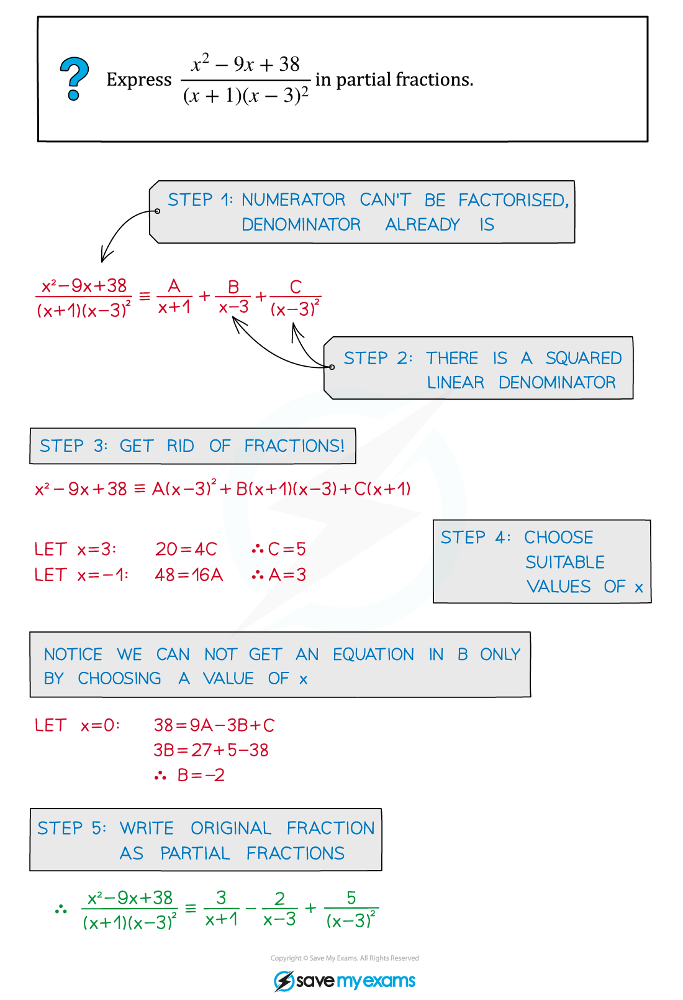
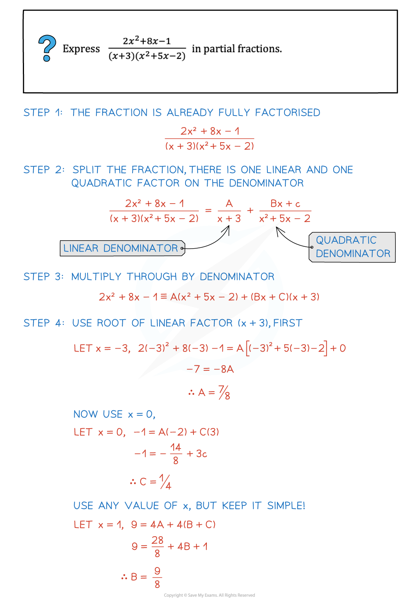
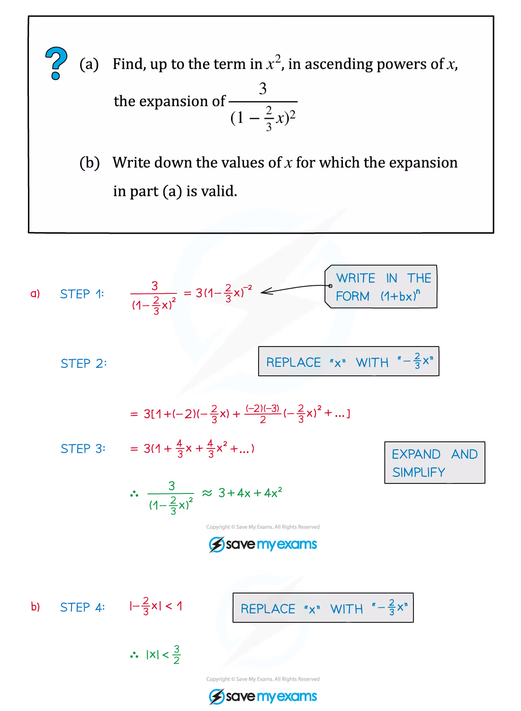
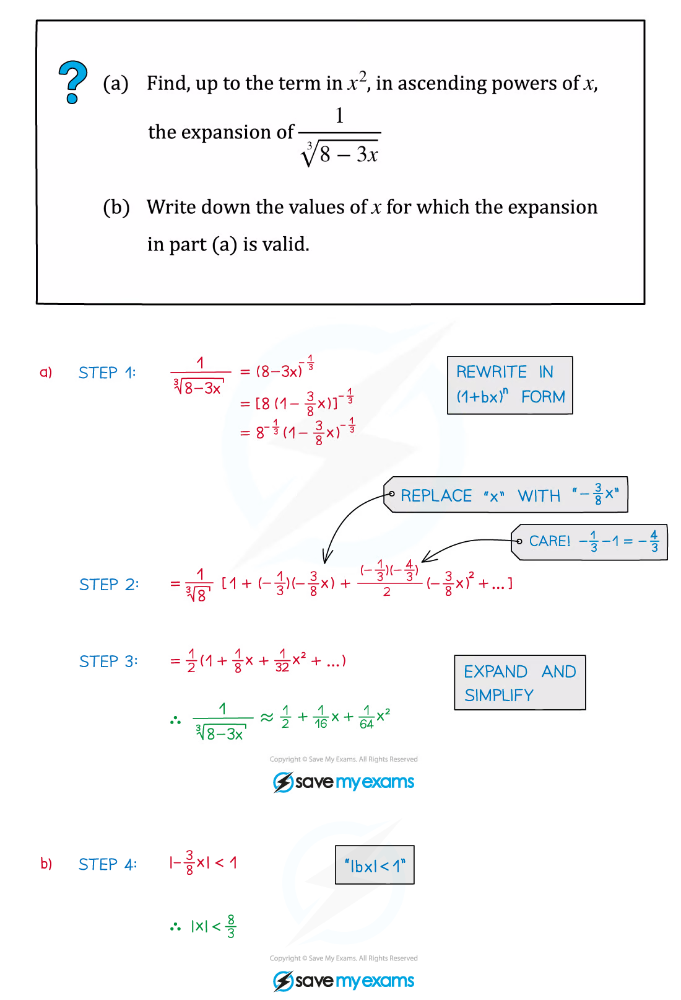
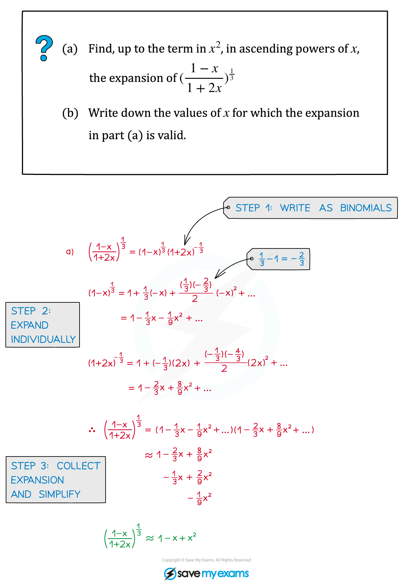
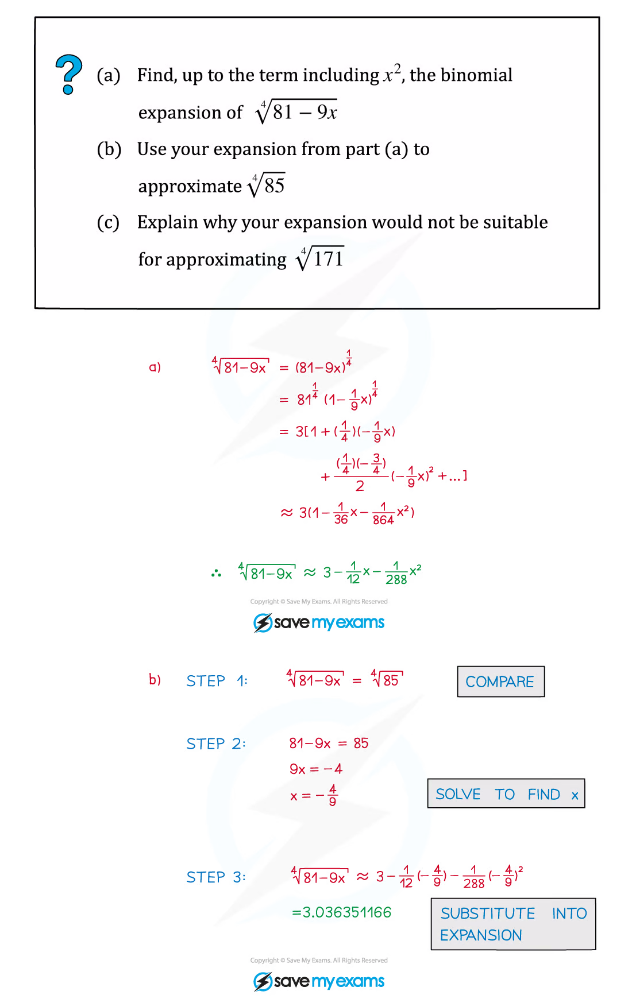

1. Algebra - Functions
Modulus · polynomials · partial fractions · binomial expansion
本页依据 9709 Mathematics 2026–2027 syllabus 3.1 Algebra，覆盖：
- modulus 的含义、y=|ax+b| 图像，以及 modulus equations and inequalities；
- polynomial division（被除式次数不超过 4）、quotient、remainder、factor theorem 与 remainder theorem；
- 指定形式的 partial fractions；
- (1+x)^n 的 general binomial expansion（n 为有理数）、有效范围与应用。
考纲明确：非线性函数的 y=|f(x)| 与 y=f(|x|) 图像不在本节要求内；partial fractions 不包含分子次数高于分母的情形。
Learning objectives
1. Modulus
Meaning and graph of modulus
对于实数 u，
|u|=\begin{cases}u,&u\ge0,\\-u,&u<0.\end{cases}
所以 y=|ax+b| 的图像是一个 V 形：先画直线 y=ax+b，再把 x 轴下方的部分关于 x 轴反射。顶点位于 ax+b=0，即 \left(-b/a,0\right)（a\ne0）。
常用等价关系：
|a|=|b|\iff a^2=b^2,
|x-a|<b\iff a-b<x<a+b\qquad(b>0).
Solving modulus equations and inequalities
遇到 |f(x)|=|g(x)|，可以写成 f(x)=g(x) 或 f(x)=-g(x)；遇到 |f(x)|<|g(x)|，可在两边非负时平方，或先画图确认符号区间。最后必须代回原不等式检查，尤其是严格不等号不能写成等号。
Worked example · 笔记第 5 页

这道例题的核心是：|3x+1| 的负值部分要关于 x 轴反射；图像交点个数就是方程解的个数。
Worked example · 笔记第 8 页

解 modulus inequality 时，图像可以直接告诉你应保留两个交点之间还是外侧区间；代数法则要与图像结论一致。
2. Polynomial division and theorems
Polynomial division
若 f(x) 除以 d(x)，则
f(x)=d(x)q(x)+r(x),\qquad \deg r<\deg d.
当除式是二次式时，余式至多为一次式。考试中要区分：quotient 是商，remainder 是余式，并可用恒等式复核结果。
Worked example · 笔记第 14 页

Worked example · 笔记第 31 页

Factor theorem
(x-a)\text{ is a factor of }f(x)\iff f(a)=0.
若除式是 ax-b，对应的检验点是 x=b/a。要因式分解 cubic，通常先尝试 x=1,-1,2,-2,3,-3 等整数根，再用 polynomial division 降次。
Worked example · 笔记第 18 页

Remainder theorem
当 f(x) 除以 (x-a) 时，余数为 f(a)：
f(x)=(x-a)q(x)+f(a).
当除式为 (ax-b) 时，余数为 f\!\left(\frac ba\right)。这常用于由两个 remainder conditions 建立 simultaneous equations。
Worked example · 笔记第 20 页

Worked example · 笔记第 24 页

Worked example · 笔记第 28 页

3. Partial fractions
Required forms
先确保分子次数小于分母次数，再完全因式分解 denominator。考纲规定的三种基本形式是：
\frac{P(x)}{(ax+b)(cx+d)(ex+f)}=\frac A{ax+b}+\frac B{cx+d}+\frac C{ex+f},
\frac{P(x)}{(ax+b)(cx+d)^2}=\frac A{ax+b}+\frac B{cx+d}+\frac C{(cx+d)^2},
\frac{P(x)}{(ax+b)(cx^2+d)}=\frac A{ax+b}+\frac{Bx+C}{cx^2+d}.
乘回 denominator 后，优先代入能令某个 factor 为零的 x 值；若无法一次消去未知数，再比较 coefficients 或解 simultaneous equations。
Worked example · 笔记第 35 页

Worked example · 笔记第 39 页

Worked example · 笔记第 41 页

4. General binomial expansion
Formula and validity
(1+x)^n=1+nx+\frac{n(n-1)}{2!}x^2+\frac{n(n-1)(n-2)}{3!}x^3+\cdots
当 n 不是非负整数时，这是 infinite expansion，并且必须满足
|x|<1.
若括号是 (1+bx)^n，有效条件是 |bx|<1。对多个 binomial expansion，最终有效范围是各条件的 intersection。
Worked example · 笔记第 52 页

Worked example · 笔记第 55 页

Worked example · 笔记第 61 页

Worked example · 笔记第 65 页

5. Paper 3 past-paper questions
本节保留 20 道 与本章考点直接相关的题目：modulus、polynomial division、factor/remainder theorem、partial fractions 和 binomial expansion。题目文字保持原题；答案区按对应 mark scheme 展开方法、临界值/系数和最终结论。
Modulus
Example 1 · Modulus inequality · 9709/33/M/J/20 Q1
modulusinequality
Solve the inequality |2x-1|>3|x+2|. [4]
Show detailed mark scheme answer
Both sides are non-negative, so squaring preserves the inequality:
(2x-1)^2>9(x+2)^2.
Expanding and collecting terms,
4x^2-4x+1>9x^2+36x+36,
5x^2+40x+35<0,
5(x+7)(x+1)<0.
The critical values are x=-7 and x=-1. Since the quadratic has positive leading coefficient, it is negative between its roots:
\boxed{-7<x<-1}.PastPaper/2020/2020/9709-s20-qp-33.pdf and matching mark scheme.
Example 2 · Modulus inequality · 9709/31/O/N/20 Q1
moduluspiecewise method
Solve the inequality 2-5x>2|x-3|. [4]
Show detailed mark scheme answer
For x<3, |x-3|=3-x, so
2-5x>2(3-x)=6-2x\implies -4>3x\implies x<-\frac43.
For x\ge3, |x-3|=x-3, giving 2-5x>2x-6, hence x<8/7, which is incompatible with x\ge3. Thus this branch gives no solutions.
Therefore
\boxed{x<-\frac43}.PastPaper/2020/2020/9709_w20_qp_31.pdf and matching mark scheme.
Example 3 · Modulus inequality · 9709/31/M/J/21 Q1
modulusquadratic
Solve the inequality 2|3x-1|<|x+1|. [4]
Show detailed mark scheme answer
Square both non-negative sides:
4(3x-1)^2<(x+1)^2.
Thus
36x^2-24x+4<x^2+2x+1,
35x^2-26x+3<0.
The roots are
x=\frac{26\pm\sqrt{(-26)^2-4(35)(3)}}{70}=\frac{26\pm16}{70},
so x=1/7 or x=3/5. The quadratic is negative between the roots:
\boxed{\frac17<x<\frac35}.PastPaper/2021/2021/9709_s21_qp_31.pdf and matching mark scheme.
Example 4 · Modulus inequality · 9709/32/M/J/21 Q1
modulusquadratic
Solve the inequality |2x-1|<3|x+1|. [4]
Show detailed mark scheme answer
Squaring gives
4x^2-4x+1<9x^2+18x+9,
5x^2+22x+8>0.
The roots are
x=\frac{-22\pm\sqrt{22^2-4(5)(8)}}{10}=\frac{-22\pm18}{10},
namely -4 and -2/5. Since the quadratic opens upwards, it is positive outside the roots:
\boxed{x<-4\quad\text{or}\quad x>-\frac25}.PastPaper/2021/2021/9709_s21_qp_32.pdf and matching mark scheme.
Example 5 · Modulus inequality · 9709/32/F/M/22 Q1
modulusinequality
Solve the inequality |2x+3|>3|x+2|. [4]
Show detailed mark scheme answer
Squaring and rearranging,
4x^2+12x+9>9x^2+36x+36,
5x^2+24x+27<0=5(x+3)\left(x+\frac95\right).
The roots are -3 and -9/5. The quadratic is negative between them:
\boxed{-3<x<-\frac95}.PastPaper/2022/2022/9709_m22_qp_32.pdf and matching mark scheme.
Example 6 · Modulus inequality with a parameter · 9709/33/M/J/22 Q1
modulusparameter
Find, in terms of a, the set of values of x satisfying 2|3x+a|<|2x+3a|, where a is a positive constant. [4]
Show detailed mark scheme answer
Both sides are non-negative, so square and factor the difference:
4(3x+a)^2<(2x+3a)^2,
[2(3x+a)-(2x+3a)][2(3x+a)+(2x+3a)]<0.
Hence
(4x-a)(8x+5a)<0.
Because a>0, the critical values are x=-5a/8 and x=a/4, and the product is negative between them:
\boxed{-\frac{5a}{8}<x<\frac a4}.PastPaper/2022/2022/9709_s22_qp_33.pdf and matching mark scheme.
Example 7 · Modulus graph and inequality · 9709/31/O/N/22 Q1
modulusgraph
(a) Sketch the graph of y=|2x+1|. [1]
(b) Solve the inequality 3x+5<|2x+1|. [3]
Show detailed mark scheme answer
The graph is a V with vertex (-1/2,0).
For x<-1/2, |2x+1|=-2x-1, so
3x+5<-2x-1\implies5x<-6\implies x<-\frac65.
For x\ge-1/2, |2x+1|=2x+1, so 3x+5<2x+1 gives x<-4, which is incompatible with x\ge-1/2. Therefore
\boxed{x<-\frac65}.PastPaper/2022/2022/9709_w22_qp_31.pdf and matching mark scheme.
Example 8 · Modulus graph and inequality · 9709/32/O/N/23 Q1
modulusgraph
(a) Sketch the graph of y=|4x-2|. [1]
(b) Solve the inequality 1+3x<|4x-2|. [4]
Show detailed mark scheme answer
The graph is a V with vertex (1/2,0).
If x<1/2, then |4x-2|=2-4x and
1+3x<2-4x\implies7x<1\implies x<\frac17.
If x\ge1/2, then |4x-2|=4x-2 and
1+3x<4x-2\implies x>3.
Thus
\boxed{x<\frac17\quad\text{or}\quad x>3}.PastPaper/2023/2023/9709_w23_qp_32.pdf and matching mark scheme.
Example 9 · Modulus graph and inequality · 9709/32/M/J/24 Q1
modulusparameter
(a) Sketch the graph of y=|x-2a|, where a is a positive constant. [1]
(b) Solve the inequality 2x-3a<|x-2a|. [2]
Show detailed mark scheme answer
The V has vertex (2a,0). For the relevant branch x<2a, |x-2a|=2a-x, so
2x-3a<2a-x\implies3x<5a\implies x<\frac53a.
The other branch gives x>5a, which is incompatible with x\ge2a only if the branch condition is checked? In fact for x\ge2a, the inequality becomes 2x-3a<x-2a, hence x<a, incompatible with x\ge2a. Therefore
\boxed{x<\frac53a}.PastPaper/2024/2024/A-Level-CAIE数学QP-202406-Mathematics-P32-A-Level题库大全小程序.pdf and matching mark scheme.
Polynomial division, theorems and partial fractions
Example 10 · Polynomial division · 9709/32/M/J/20 Q1
divisionquotient and remainder
Find the quotient and remainder when 6x^4+x^3-x^2+5x-6 is divided by 2x^2-x+1. [3]
Show detailed mark scheme answer
First term: 6x^4/(2x^2)=3x^2. Subtracting 3x^2(2x^2-x+1) leaves 4x^3-4x^2+5x-6.
Next term: 4x^3/(2x^2)=2x. Subtracting 2x(2x^2-x+1) leaves -2x^2+3x-6.
Next term: -2x^2/(2x^2)=-1. Subtracting -(2x^2-x+1) leaves 2x-5, whose degree is less than 2. Hence
\boxed{q(x)=3x^2+2x-1,\qquad r(x)=2x-5}.PastPaper/2020/2020/9709-s20-qp-32.pdf and matching mark scheme.
Example 11 · General binomial expansion · 9709/31/M/J/20 Q2(a)
binomialvalidity
Expand (2-3x)^{-2} in ascending powers of x, up to and including the term in x^2, simplifying the coefficients. [4]
Show detailed mark scheme answer
Write
(2-3x)^{-2}=\frac14\left(1-\frac32x\right)^{-2}.
Using (1+u)^{-2}=1-2u+3u^2+\cdots with u=-3x/2,
(2-3x)^{-2}=\frac14\left[1+3x+\frac{27}{4}x^2+\cdots\right].
Therefore
\boxed{\frac14+\frac34x+\frac{27}{16}x^2}.
The validity condition is |3x/2|<1, i.e. |x|<2/3.PastPaper/2020/2020/9709-s20-qp-31.pdf and matching mark scheme.
Example 12 · Partial fractions · 9709/33/M/J/20 Q7(a)
partial fractionslinear factors
Let f(x)=\dfrac{2}{(2x-1)(2x+1)}. Express f(x) in partial fractions. [2]
Show detailed mark scheme answer
Assume
\frac{2}{(2x-1)(2x+1)}=\frac A{2x-1}+\frac B{2x+1}.
Multiplying through gives
2=A(2x+1)+B(2x-1).
Comparing coefficients gives A+B=0 and A-B=2, so A=1 and B=-1. Therefore
\boxed{f(x)=\frac1{2x-1}-\frac1{2x+1}}.PastPaper/2020/2020/9709-s20-qp-33.pdf and matching mark scheme.
Example 13 · Factor and remainder theorem · 9709/32/F/M/21 Q2
factor theoremremainder theorem
The polynomial ax^3+5x^2-4x+b is p(x). It is given that (x+2) is a factor of p(x) and that division by (x+1) leaves remainder 2. Find a and b. [5]
Show detailed mark scheme answer
Factor theorem:
p(-2)=0\implies-8a+20+8+b=0\implies-8a+b=-28.
Remainder theorem:
p(-1)=2\implies-a+5+4+b=2\implies-a+b=-7.
Subtracting the second equation from the first gives -7a=-21, so a=3. Then -3+b=-7, giving b=-4.
\boxed{a=3,\qquad b=-4}.PastPaper/2021/2021/9709_m21_qp_32.pdf and matching mark scheme.
Example 14 · Exponential modulus equation · 9709/31/O/N/21 Q1
modulusexponentials
Solve the equation 4|5^x-1|=5^x, giving your answers correct to 3 decimal places. [4]
Show detailed mark scheme answer
Let u=5^x, so u>0.
If u\ge1, then 4(u-1)=u, so 3u=4 and u=4/3, giving x=\ln(4/3)/\ln5=0.179\ldots.
If 0<u<1, then 4(1-u)=u, so 5u=4 and u=4/5, giving x=\ln(4/5)/\ln5=-0.139\ldots.
Both values satisfy their assumed cases, hence
\boxed{x=0.179\quad\text{or}\quad x=-0.139}.PastPaper/2021/2021/9709_w21_qp_31.pdf and matching mark scheme.
Example 15 · Polynomial division · 9709/33/O/N/21 Q1
divisionquotient and remainder
Find the quotient and remainder when 2x^4+1 is divided by x^2-x+2. [3]
Show detailed mark scheme answer
The successive quotient terms are 2x^2, then 2x, then -2:
2x^4+1=(x^2-x+2)(2x^2+2x-2)+(-6x+5).
Therefore
\boxed{q(x)=2x^2+2x-2,\qquad r(x)=-6x+5}.PastPaper/2021/2021/9709_w21_qp_33.pdf and matching mark scheme.
Example 16 · Partial fractions with a repeated factor · 9709/31/M/J/23 Q8(a)
partial fractionsrepeated factor
Let f(x)=\dfrac{3-3x^2}{(2x+1)(x+2)^2}. Express f(x) in partial fractions. [5]
Show detailed mark scheme answer
Use the required form
\frac{3-3x^2}{(2x+1)(x+2)^2}=\frac A{2x+1}+\frac B{x+2}+\frac C{(x+2)^2}.
After multiplying through by (2x+1)(x+2)^2,
3-3x^2=A(x+2)^2+B(2x+1)(x+2)+C(2x+1).
Putting x=-1/2 gives 15/4=(9/4)A, so A=1. Putting x=-2 gives -9=-3C, so C=3. Finally x=0 gives 3=4A+2B+C, hence B=-2.
Therefore
\boxed{f(x)=\frac1{2x+1}-\frac2{x+2}+\frac3{(x+2)^2}}.PastPaper/2023/2023/9709_s23_qp_31.pdf and matching mark scheme.
Binomial expansion and recent theorem questions
Example 17 · Binomial expansion · 9709/33/M/J/21 Q1
binomialseries
Expand (1+3x)^{2/3} in ascending powers of x, up to and including the term in x^3, simplifying the coefficients. [4]
Show detailed mark scheme answer
Use
(1+u)^n=1+nu+\frac{n(n-1)}2u^2+\frac{n(n-1)(n-2)}6u^3+\cdots
with n=2/3 and u=3x:
1+\frac23(3x)+\frac{(2/3)(-1/3)}2(3x)^2+\frac{(2/3)(-1/3)(-4/3)}6(3x)^3.
Simplifying,
\boxed{1+2x-x^2+\frac43x^3}.PastPaper/2021/2021/9709_s21_qp_33.pdf and matching mark scheme.
Example 18 · Polynomial division · 9709/32/F/M/24 Q1
divisionquotient and remainder
Find the quotient and remainder when x^4-3x^3+9x^2-12x+27 is divided by x^2+5. [3]
Show detailed mark scheme answer
The quotient begins with x^2, then -3x, then +4:
x^4-3x^3+9x^2-12x+27=(x^2+5)(x^2-3x+4)+(3x+7).
The remainder has degree less than 2, so
\boxed{q(x)=x^2-3x+4,\qquad r(x)=3x+7}.PastPaper/2024/2024/A-Level-CAIE数学QP-202403-Mathematics-P32-A-Level题库大全小程序.pdf and matching mark scheme.
Example 19 · Product of expansions · 9709/31/M/J/24 Q1
binomialseries
Expand (3+x)(1-2x)^{1/2} in ascending powers of x, up to and including the term in x^2, simplifying the coefficients. [4]
Show detailed mark scheme answer
First expand the square-root factor:
(1-2x)^{1/2}=1+\frac12(-2x)+\frac{(1/2)(-1/2)}2(-2x)^2+\cdots =1-x-\frac12x^2+\cdots.
Now multiply by (3+x) and retain terms through x^2:
(3+x)(1-x-\tfrac12x^2)=3-3x-\tfrac32x^2+x-x^2+\cdots.
Hence
\boxed{3-2x-\frac52x^2}.PastPaper/2024/2024/A-Level-CAIE数学QP-202406-Mathematics-P31-A-Level题库大全小程序.pdf and matching mark scheme.
Example 20 · Factor and remainder theorem · 9709/31/O/N/24 Q1
factor theoremremainder theorem
The polynomial 4x^3+ax^2+5x+b, where a and b are constants, is denoted by p(x). It is given that (2x+1) is a factor of p(x). When p(x) is divided by (x-4) the remainder is equal to 3 times the remainder when p(x) is divided by (x-2). Find the values of a and b. [5]
Show detailed mark scheme answer
Because 2x+1=0 at x=-1/2, the factor theorem gives
p(-\tfrac12)=0\implies \frac a4+b=3\implies a+4b=12.
The remainder theorem gives p(4)=3p(2):
276+16a+b=3(42+4a+b),
so
2a-b=-75.
Solving a+4b=12 and 2a-b=-75 gives b=11 and a=-32.
\boxed{a=-32,\qquad b=11}.PastPaper/2024/2024/A-Level-CAIE数学QP-202410-Mathematics-P31-A-Level题库大全小程序.pdf and matching mark scheme.